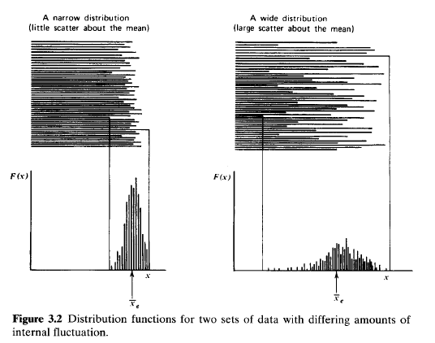
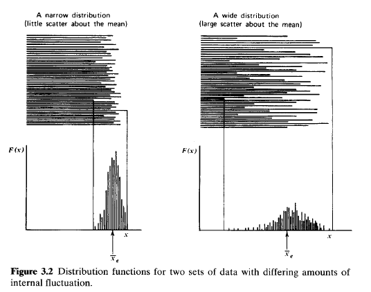
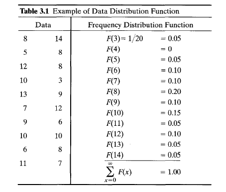
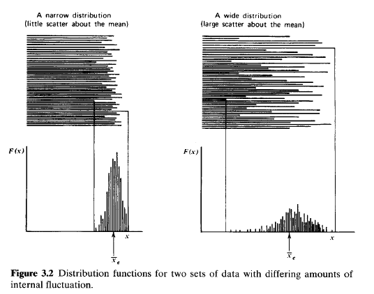
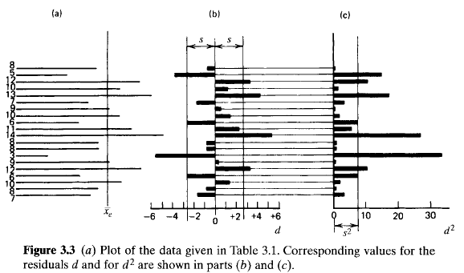

The value of counting statistics falls into two general categories. The first is to serve as a check on the normal functioning of a piece of nuclear counting equipment. Here a set of measurements is recorded under conditions in which all aspects of the experiment are held as constant as possible. Because of the influence of statistical fluctuations, these measurements will not all be the same but will show some degree of internal variation. The amount of this fluctuation can be quantified and compared with predictions of statistical models. If the amount of observed fluctuation is not consistent with predictions, one can conclude that some abnormality exists in the counting system. The second application is generally more valuable and deals with the situation in which we have only one measurement. We can then use counting statistics to predict its inherent statistical uncertainty and thus estimate an accuracy that should be associated with that single measurement.
The distinctions made in the organization of this chapter are a critical part of the topic. The confusion that often arises when the student is first introduced to counting statistics originates more from a failure to keep separate the concepts presented in Sections I and I1 than from any other single cause. In Section I we are careful to limit the discussion to methods used in the characterization or organization of experimental data. We are not particularly concerned where these data come from but rather are interested only in presenting the formal methods by which we can describe the amount of fluctuation displayed by the data. In Section 11, we discuss the separate topic of probabilistic mathematical models, which can sometimes represent real measurement systems. For purposes of the discussion in Section 11, however, we are concerned only with the structure and predictions of these models as mathematical entities. We reserve, until Section 111, the demonstration of how the statistical models can be matched to experimental data, resulting in the two common applications of counting statistics mentioned above. In Section IV, we examine how the predicted statistical uncertainties propagate through the calculations typically needed to produce a quoted final result that is calculated from counting data. The final three sections of the chapter illustrate some further examples of applications of statistical principles in radiation measurements.
It is often convenient to represent the data set by a corresponding frequency distribution function \(F(x)\). The value of \(F(x)\) is the relative frequency with which the number appears in the collection of data. By definition \[ F(x) = \frac { \begin{eqnarray} \rm number \; of \; occurrences \; of \; the \; value \; \end{eqnarray} x } { \begin{eqnarray} \rm number \; of \; measurements \; \end{eqnarray} (= N) } \tag{3.3} \] The distribution is automatically normalized, that is, \[ \sum_{x = 0}^{\infty}F(x) = 1 \tag{3.4} \] As long as we do not care about the specific sequence of the numbers, the complete data distribution function \(F(x)\) represents all the information contained in the original data set.
For purposes of illustration, Table 3.1 gives a hypothetical set of data consisting of 20 entries. Because these entries range from a minimum of 3 to maximum of 14, the data distribution function will have nonzero values only between these extreme values of the argument x. The corresponding values of \(F(x)\) are also shown in Table 3.1.
A plot of the data distribution function for the example is given in Fig. 3.1. Also shown directly above the plot is a horizontal bar graph of the original 20 numbers from which the distribution was derived. These data show an experimental mean of 8.8, and the distribution function is in some sense centered about that value. Furthermore, the relative shape of the distribution function indicates qualitatively the amount of internal fluctuation in the data set. For example, Fig. 3.2 shows the shape of the distribution functions corresponding to two extreme sets of data: one with large amounts of scatter about the mean and one with little scatter. An obvious conclusion is that the width of the distribution function is a relative measure of the amount of fluctuation or scattering about the mean inherent in a given set of data.
It is possible to calculate the experimental mean by using the data distribution function, because the mean of any distribution is simply its first moment \[ \overline{x}_{e} = \sum_{x = 0}^{\infty}xF(x) \tag{3.5} \] It is also possible to derive another parameter, called the sample variance, which will serve to quantify the amount of internal fluctuation in the data set. The first step is to define the


If we take the square of each residual, however, a positive number will always result. These are plotted for the example in Fig. 3.3~.We next define the deviation of a given data point as the amount by which it differs from the true mean value \(\overline{x}\)
\[ \epsilon_{i} \equiv x_{i} - \overline{x} \tag{3.7} \] The deviation defined in this way is similar to the residual introduced above, except that the distance from the true mean value \(\overline{x}\) appears in the definition rather than the experimental mean \(\overline{x}_{e}\). We now can introduce the definition of the sample variance as the average value of each of these deviations after squaring \[ s^{2} = \overline{\epsilon^{2}} = \frac{1}{N}\sum_{i = 1}^{N}(x_{i} - \overline{x})^{2} \tag{3.8} \] The sample variance is a useful index of the degree of the internal scatter in the data or as a measure of how different a typical number is from another.This definition presents a practical difficulty, since we can never know the exact value of the true mean \(\overline{x}\) without collecting an infinite number of data points. The best we can do is to use the experimental mean value \(\overline{x}_{e}\) that we have measured, and thus use rcsiduals rather than deviations. But the process of using the experimental rather than the true mean value will affect the calculated value of the sample variance, and we cannot simply substitute \(\overline{x}_{e}\) iein to Eq. 3.8. Instead, the analysis given in Appendix B shows that the alternative expression
\[ s^{2} = \frac{1}{N - 1}\sum_{i = 1}^{N}(x_{i} - \overline{x})^{2} \tag{3.9} \] is now valid when the experimental mean is used. The sum of squared residuals in the above equation is divided by \(N - 1\) rather than by \(N\) as in Eq. 3.8, a distinction that is significant only when the number of measurements \(N\) is small. For large data sets, therefore, the sample variance can be thought of as the mean squared value of either the residuals or the deviations.The sample variance \(s^{2}\) for the example of 20 numbers is shown graphically in Fig. 3.3~. Because it is essentially a measure of the average value of the squared deviations of each point, \(s^{2}\) is an effective measure of the amount of fluctuation in the original data. A data set with a narrow distribution will have a small typical deviation from the mean, and therefore the value for the sample variance will be small. On the other hand, data with a large amount of fluctuation will have a wide distribution and a large value for typical deviations, and the corresponding sample variance will also be large. It is important to note that the sample variance is an absolute measure of the amount of internal scatter in the data and does not, to first approximation, depend on the number of values in the data set. For example, if the data shown in Fig. 3.3 were extended by simply collecting an additional 20 values by the same process, we would not expect the sample variance calculated for the extended collection of 40 numbers to be substantially different from that shown in Fig 3.3.
We can also calculate the sample variance directly from the data distribution function \(F(x)\). Because Eq. (3.8) indicates that \(s^{2}\) is simply the average of \((x - \overline{x})^{2}\), we can write that same average as
\[ s^{2} = \sum_{x = 0}{\infty}(x - \overline{x})^{2}F(x) \tag{3.10} \] Equation (3.10) is not introduced so much for its usefulness in computation as for the parallel it provides to a similar expression, Eq. (3.17), which will be introduced in a later discussion of statistical models. An expansion of Eq. (3.10) will yield the well-known result \[ s^{2} = \overline{x^{2}} - (\overline{x})^{2} \tag{3.11} \]We now end our discussion of the organization of experimental data with two important conclusions:
The experimental mean is given by Eq. (3.5) and is the value about which the distribution is centered.The sample variance is given by Eq. (3.10) and is a measure of the width of the distribution, or the amount of internal fluctuation in the data.